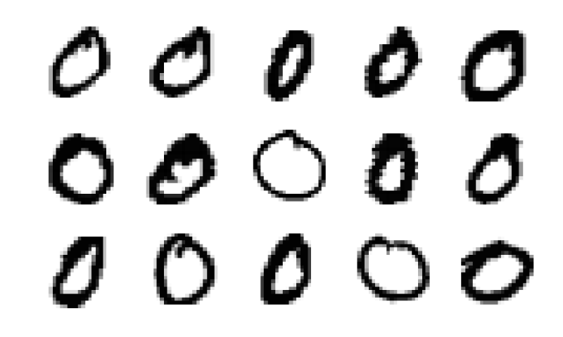

More complex networks
This lecture shows how to train more complex networks using stochastic gradient descent. We will use the MNIST dataset containing 60000 images of digits 0-9. Each image is represented by 28 pixels in each dimension.

Preparing data
During the last lecture, we implemented everything from scratch. This lecture will introduce the package Flux which automizes most of the things needed for neural networks.
- It creates many layers, including convolutional layers.
- It creates the model by chaining layers together.
- It efficiently represents model parameters.
- It automatically computes gradients and trains the model by updating the parameters.
This functionality requires inputs in a specific format.
- Images must be stored in
Float32instead of the commonly usedFloat64to speed up operations. - Convolutional layers require that the input has dimension $n_x\times n_y\times n_c\times n_s$, where $(n_x,n_y)$ is the number of pixels in each dimension, $n_c$ is the number of channels (1 for grayscale, and 3 for coloured images) and $n_s$ is the number of samples.
- In general, samples are always stored in the last dimension.
We use the package MLDatasets to load the data.
using MLDatasets
T = Float32
X_train, y_train = MLDatasets.MNIST.traindata(T)
X_test, y_test = MLDatasets.MNIST.testdata(T)The first two exercises visualize the data and transform it into the correct input shape required by Flux.
Plot the first 15 images of the digit 0 from the training set.
Hint: The ImageInspector package written earlier provides the function imageplot(X_train, inds; nrows=3), where inds are the desired indices.
Hint: To find the correct indices, use the function findall.
Solution:
The unique elements in y_train show that it represents the digits.
unique(y_train)10-element Array{Int64,1}:
5
0
4
1
9
2
3
6
7
8Then we use the findall function to find the indices of the first 15 images of the digit zero.
inds = findall(y_train .== 0)[1:15]We use the imageplot function to plot the images. To invert the colours, we need to call it with 1 .- X_train instead of X_train.
using Plots
using ImageInspector
imageplot(1 .- X_train, inds; nrows=3, size=(800,480))
savefig("mnist_intro2.svg") # hide
Write function reshape_data, which reshapes X_train and X_test into the correct size required by Flux.
Hint: The function should work only on inputs with the correct size. This can be achieved by specifying the correct input type X::AbstractArray{<:Real, 3}.
Solution:
As we have never worked with MLDatasets, we do not know in which format the loading function returns the data.
typeof(X_train)Array{Float32,3}The variable X_train stores a three-dimensional array of images.
size(X_train)(28, 28, 60000)
Its size shows that the first two dimensions are the number of pixels and the last dimension are the samples. Since the images are grayscale, the dimension representing channels is missing. We need to add it.
function reshape_data(X::AbstractArray{<:Real, 3})
s = size(X)
return reshape(X, s[1], s[2], 1, s[3])
endWe specify that the input array has three dimensions via X::AbstractArray{T, 3}. This may prevent surprises when called with different input size.
We write now the function load_data, which loads the data and transform it into the correct shape. The keyword argument onehot specifies whether the labels should be converted into their one-hot representation. The dataset keyword specifies which dataset to load. It can be any dataset from the MLDatasets package, or we can even use datasets outside of this package provided that we define the traindata and testdata functions for it.
using Flux
using Flux: onehotbatch, onecold
function load_data(dataset; T=Float32, onehot=false, classes=0:9)
X_train, y_train = dataset.traindata(T)
X_test, y_test = dataset.testdata(T)
X_train = reshape_data(X_train)
X_test = reshape_data(X_test)
if onehot
y_train = onehotbatch(y_train, classes)
y_test = onehotbatch(y_test, classes)
end
return X_train, y_train, X_test, y_test
endNow we use this function to load the data and modify them into the correct form.
X_train, y_train, X_test, y_test = load_data(MLDatasets.MNIST; T=T, onehot=true)The previous example mentioned that load_data is rather general. The next exercise makes it work for datasets with coloured images.
Try to load the CIFAR10 dataset via the load_data function and fix the error in one line of code.
Hint: Use dataset = MLDatasets.CIFAR10.
Solution:
We first load the data in the same way as before.
load_data(MLDatasets.CIFAR10; T=T, onehot=true)│ MethodError: no method matching reshape_data(::Array{Float32,4})
│ Closest candidates are:
│ reshape_data(::AbstractArray{T,3} where T) where TIt results in an error which states that the reshape_function functon is not defined for inputs with 4 dimensions. We did not implement it because MNIST contains grayscale images, which leads to arrays with 3 dimensions. To fix the problem, it suffices to add a method to the reshape_data function.
reshape_data(X::AbstractArray{<:Real, 4}) = XNow we can load the data.
typeof(load_data(MLDatasets.CIFAR10; T=T, onehot=true))Tuple{Array{Float32,4},Flux.OneHotMatrix{Array{Flux.OneHotVector,1}},Array{Float32,4},Flux.OneHotMatrix{Array{Flux.OneHotVector,1}}}We see that it correctly returned a tuple of four items.
Training and storing the network
We recall that machine learning minimizes the discrepancy between the predictions $\operatorname{predict}(w; x_i)$ and labels $y_i$. Mathematically, this amount to minimizing the following objective function.
\[L(w) = \frac1n\sum_{i=1}^n \operatorname{loss}(y_i, \operatorname{predict}(w; x_i)).\]
The gradient descent works with the derivative $\nabla L(w)$, which contains the mean over all samples. Since the MNIST training set size is 50000, evaluating one full gradient is costly. For this reasons, the gradient is approximated by a mean over a small number of samples. This small set is called a minibatch, and this accelerated method stochastic gradient descent.
The following exercise splits the dataset into minibatches. While we can do it manually, Flux provides a simple way to do so.
Use the help of the function DataLoader to split the dataset into minibatches.
Hint: It needs to be imported from Flux via using Flux.Data: DataLoader.
Solution:
We first load the function DataLoader.
using Flux.Data: DataLoaderThe in-built help shows us how to call this function. It also includes multiple examples.
help?> DataLoader
search:
DataLoader(data; batchsize=1, shuffle=false, partial=true)We use the following code to split the dataset into minibatches. We need to include both X_train and y_train to perform the partition for the data and the labels.
batchsize = 32
batches = DataLoader((X_train, y_train); batchsize, shuffle = true)We can do the same procedure manually. To create minibatches, we create a random partition of all indices randperm(size(y, 2)) and use function partition to create an iterator, which creates the minibatches in the form of tuples $(X,y)$.
using Base.Iterators: partition
using Random
batches = map(partition(randperm(size(y, 2)), batchsize)) do inds
return (X[:, :, :, inds], y[:, inds])
endThis procedure is equivalent to the map function.
[(X[:, :, :, inds], y[:, inds]) for inds in partition(randperm(size(y, 2)), batchsize)]The type of batches is a one-dimensional array (vector) of tuples.
To build the objective $L$, we first specify the prediction function $\operatorname{predict}$. We keep the usual convention and denote it by model m. It is a composition of seven layers:
- Two convolutional layers extract low-level features from the images.
- Two pooling layers reduce the size of the previous layer.
- One flatten layer converts multi-dimensional arrays into one-dimensional vectors.
- One dense layer is usually applied at the end of the chain.
- One softmax layer is usually the last one and results in probabilities.
using Random
Random.seed!(666)
m = Chain(
Conv((2,2), 1=>16, relu),
MaxPool((2,2)),
Conv((2,2), 16=>8, relu),
MaxPool((2,2)),
flatten,
Dense(288, size(y_train,1)),
softmax,
)The objective function $L$ then applies the cross-entropy loss to the predictions and labels.
using Flux: crossentropy
L(X, y) = crossentropy(m(X), y)We now write the function train_model! to train the neural network m. Since this function modifies the input model m, its name should contain the exclamation mark. Besides the loss function L, data X and labels y, it also contains as keyword arguments optimizer the optimizer opt, the minibatch size batchsize, the number of epochs n_epochs, and the file name file_name to which the model should be saved.
using BSON
function train_model!(m, L, X, y;
opt = Descent(0.1),
batchsize = 128,
n_epochs = 10,
file_name = "")
batches = DataLoader((X, y); batchsize, shuffle = true)
for _ in 1:n_epochs
Flux.train!(L, params(m), batches, opt)
end
!isempty(file_name) && BSON.bson(file_name, m=m)
return
endThe function train_model! first splits the datasets into minibatches batches and then uses the optimizer for n_epochs epochs. In one epoch, the model m evaluates all samples exactly once. Therefore, the optimizer performs the same number of gradient updates as the number of minibatches during one epoch. On the other hand, the standard gradient descent makes only one gradient update during one epoch. The default optimizer is the stochastic gradient descent with stepsize $0.1$. Since we do not need an index in the loop, we use _. Finally, if file_name is non-empty, the function saves the trained model m.
Train the model for one epoch and save it to MNIST_simple.bson. Print the accuracy on the testing set.
Solution:
To train the model, it suffices to call the previously written function.
file_name = "mnist_simple.bson"
train_model!(m, L, X_train, y_train; n_epochs=1, file_name=file_name)The accuracy has been computed many times during the course.
using Statistics
accuracy(x, y) = mean(onecold(m(x)) .== onecold(y))
"Test accuracy = " * string(accuracy(X_test, y_test))We defined accuracy in a different way than before. Can you spot the difference and explain why they are equivalent?
Test accuracy = 0.9328
The accuracy is over 93%, which is not bad for training for one epoch only. Let us recall that training for one epoch means that the classifier evaluates each sample only once. To obtain better accuracy, we need to train the model for more epochs. Since that may take some time, it is not good to train the same model repeatedly. The following exercise determines automatically whether the trained model already exists. If not, it trains it.
Write a function train_or_load!(file_name, m, args...; ???) checking whether the file file_name exists.
- If it exists, it loads it and then copies its parameters into
musing the functionFlux.loadparams!. - If it does not exist, it trains it using
train_model!.
In both cases, the model m should be modified inside the train_or_load! function. Pay special attention to the optional arguments ???.
Use this function to load the model from data/mnist.bson and evaluate the performance at the testing set.
Solution:
The optional arguments should contain kwargs..., which will be passed to train_model!. Besides that, we include force which enforces that the model is trained even if it already exists.
First, we should check whether the directory exists !isdir(dirname(file_name)) and if not, we create it mkpath(dirname(file_name)). Then we check whether the file exists (or whether we want to enforce the training). If yes, we train the model, which already modifies m. If not, we BSON.load the model and copy the loaded parameters into m by Flux.loadparams!(m, params(m_loaded)). We cannot load directly into m instead of m_loaded because that would create a local copy of m and the function would not modify the external m.
function train_or_load!(file_name, m, args...; force=false, kwargs...)
!isdir(dirname(file_name)) && mkpath(dirname(file_name))
if force || !isfile(file_name)
train_model!(m, args...; file_name=file_name, kwargs...)
else
m_weights = BSON.load(file_name)[:m]
Flux.loadparams!(m, params(m_weights))
end
endTo load the model, we should use joinpath to be compatible with all operating systems. The accuracy is evaluated as before.
file_name = joinpath("data", "mnist.bson")
train_or_load!(file_name, m, L, X_train, y_train)
"Test accuracy = " * string(accuracy(X_test, y_test))Test accuracy = 0.9815
The externally trained model has an accuracy of more than 98% (it has the same architecture as the one defined above, but it was trained for 50 epochs.). Even though there are perfect models (with accuracy 100%) on MNIST, we are happy with this result. We will perform further analysis of the network in the exercises.